| - трубчатые грибы | - пластинчатые грибы | ||
| - сумчатые грибы | - ядовитые грибы |
| Белый гриб (боровик) | 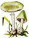 |
Бледная поганка | |
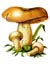 |
Валуй | 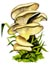 |
Вешенка |
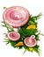 |
Волнушка | 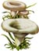 |
Груздь настоящий |
| Груздь черный (чернушка) | 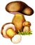 |
Желчный гриб | |
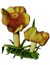 |
Зеленка | 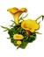 |
Лисичка |
| Масленок | 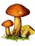 |
Моховик | |
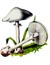 |
Мухомор вонючий | 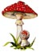 |
Мухомор красный |
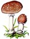 |
Мухомор пантерный | 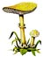 |
Мухомор поганковидный |
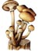 |
Опенок | Опенок ложный кирпично-красный | |
| Опенок ложный серно-желтый | 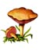 |
Перечный гриб | |
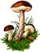 |
Подберезовик | 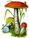 |
Подосиновик |
| Рыжик | 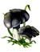 |
Рядовка серая | |
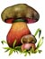 |
Сатанинский гриб | 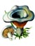 |
Серушка |
| Сморчок | 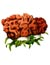 |
Строчок | |
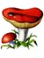 |
Сыроежка пищевая | 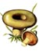 |
Толстушка |
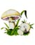 |
Шампиньон | 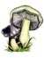 |
Энтолома ядовитая |
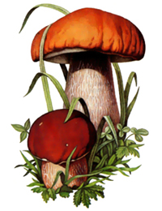 Гриб всем грибам - такое мнение о нем в народе. Белым его называют потому, что после срезания и при любых способах обработки (сушке, варении, жаренье) мякоть его остается белой. Боровик - тоже часто встречающееся название белого гриба. Боровик - обязательный житель бора, а бором на Руси исстари называют сосновый лес. Сосняки - типичное место обитания белых грибов, так как питание сосны обеспечивает "грибокорень" - микориза. Она оплетает корневые волоски дерева и помогает ему активнее всасывать минеральные соли из почвы. В свою очередь, сосна обеспечивает грибы органическими веществами, в основном углеводами. Белый гриб растет также в еловых, березовых, дубовых и смешанных лесах. Молодой гриб имеет полушаровидную, с возрастом - подушковидно-выпуклую шляпку. Цвет верха шляпки зависит от леса. В дубовом лесу у белого гриба шляпка бледная, почти белая, в сосновом - темно-коричневая, в еловом - почти черная, в лиственном - светлая. Мякоть приятного сладковатого вкуса. Трубчатый слой - мелкопористый, белый, при старении сероватого, желтоватого или оливково-зеленого цвета. Ножка гриба длиной 4-10 см и диаметром 2-5 см, плотная, у молодых грибов клубневидная, позднее почти цилиндрическая, несколько утолщенная у основания, сплошная, белая или светло-буроватая с белым сетчатым рисунком в верхней части. Белый гриб пригоден для всех видов переработки: маринования, засола, консервирования, сушки. Широко используется в кулинарии. В белом грибе найдены соединения, подавляющие развитие палочки Коха и других микроорганизмов. Японские ученые утверждают, что в белых грибах есть вещества противоопухлевого действия. |
Бледная поганка (мухомор белый). Является смертельно ядовитым грибом. Часто встречается в июле - октябре. Растет в хвойных и широколиственных лесах одиночно и группами, предпочитая опушки и просеки. Шляпка гриба сначала полушаровидная, позднее плоско-выпуклая, светло-зеленая, желтовато-буро-олив-ковая, белая, к центру более темная, шелковистая, с тонкой кожицей. Ножка центральная, цилиндрическая, кверху равномерно суженная, с пленчатым кольцом, белая или слегка зеленоватая. У основания ножка имеет булавовидное утолщение. Ножка как бы вырастает из "чехла" - свободно накинутой вольвы зеленоватого или белого цвета. Молодые грибы окутаны белой пленкой, хлопьевидные остатки которой со временем исчезают. Мякоть у бледной поганки мясистая, мелкая, слегка сладковатая, имеет выраженный грибной запах. Пластинки белые, гибкие, эластичные, не прикрепленные к ножке. По этим признакам бледную поганку можно отличить от схожих с ней сыроежки зеленой и шампиньона. У сыроежки зеленой хрупкие, ломкие пластинки, нет пленчатого кольца и "чехла". У шампиньона пластинки розовые или буро-фиолетовые, отсутствует утолщение у основания ножки. Ядовиты все части гриба, включая споры. Яды бледной поганки не уничтожаются никакими способами обработки (отваривание, сушка, засол, консервирование). |
Растет в лиственных и сосновых лесах. Шляпка вначале шаровидная, плотно прилегающая к ножке, при росте гриба становится выпуклой с сильно зубчатым краем. Края могут растрескиваться. Поверхность шляпки в сырую погоду слизистая, грязно-желто-бурая, кожица не снимается. Мякоть плотная, толстая, белая, переходящая в бледно-желтоватую. Вкус жгучеедкий с неприятным запахом. Пластинки приросшие, белые, затем желтоватые, с мелкими бурыми пятнами, иногда с капельками влаги. Споры почти шаровидные, грубобородавчатые, светло-желтые. Ножка цилиндрическая или веретенообразная, губчатая или полая, белая до соломенно-желтой, жесткая. Валуй употребляется для посола после предварительного отваривания или вымачивания. Из него готовят грибную икру. |
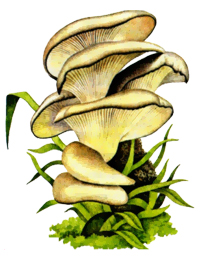 Растет на пнях и стволах лиственных, иногда хвойных пород. Шляпка выпуклая или воронковидная, неправильно-округлая, чаще однобокая, влажная, буровато-серого цвета, гладкая. Мякоть хорошо развитая, белая, сочная, несколько жестковатая, с приятным запахом и вкусом. Пластинки нисходящие, узкие, с перемычками, белые или желтеющие. Ножка очень короткая или отсутствует, сплющенная, почти у всех грибов расположена асимметрично. Сок вешенки подавляет развитие кишечной палочки. Вешенка употребляется для приготовления первых и вторых блюд, соления, маринования. Из сушеных грибов делают ароматный порошок - приправу. |
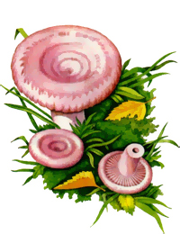 Растет в различных лесах с березовым древостоем, предпочитая влажные места. Соседствует с рыжиком и груздем. Шляпка вначале выпуклая, затем широковоронковидная, сухая или слегка влажная, войлочно-волокнистая, с ровными завернутыми внутрь сильно опушенными краями, розовато-красноватая, с хорошо выраженными концентрическими зонами. Мякоть плотная, довольно ломкая, белая или светло-желтая, с белым едким млечным соком и смолистым запахом. Пластинки приросшие или нисходящие, частые, тонкие, белые, потом розовые. Встречается повсеместно, но во многих районах недооценивается. Ножка цилиндрическая, ровная, полая, ломкая, гладкая, почти одного цвета со шляпкой. Используют в пищу после предварительного отваривания или вымачивания. На волнушку розовую похожа волнушка белая (белянка). Шляпка у нее светлее и кольца в окраске поверхности отсутствуют. Ножка более тонкая, пластинки частые. Использование в пищу такое же, как и волнушки розовой. |
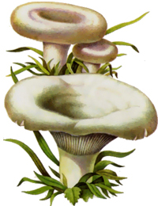 Встречается в разных лесах, особенно в березовых и сосново-березовых. Имеет широкую (до 20 см) выпукло-плоскую, в зрелости воронковидную шляпку с волокнистым завернутым низом. Поверхность шляпки слизистая, белая, может быть кремово-желтая с едва заметными концентрическими полосами. Мякоть хорошо развитая, плотная, ломкая, белая, на изломе окраску не меняет, с обильным жгучим белым млечным соком, желтеющим на воздухе, с легким грибным запахом. Пластинки узкие, нисходящие, частые, разветвленные, белые с желтоватым краем. Ножка цилиндрическая, к зрелости полая, белая, иногда с желтоватыми пятнами. Искать грузди надо очень внимательно, так как они прячутся под слоем прошлогодних листьев. Приподняв такой бугорок, можно встретить их целое семейство. Грузди в свежем виде не используются из-за едкого млечного сока. Высококачественную продукцию в соленом виде дают после тщательного вымачивания. Соленые грузди - фирменное блюдо русской кухни. В сырых лесах, под слоем опавших листьев, хвои и мха встречается груздь желтый. Употребляется в пищу после предварительного вымачивания. |
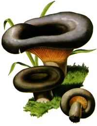 Растет во влажных смешанных лесах с преобладанием березы, орешника. Имеет шляпку выпуклую или плоскую с завернутыми краями, затем вдавленную в середине, воронковидную со слегка распрямляющимися бархатистыми краями иногда липкую. Окраска почти черная с оливковым оттенком и едва заметными концентрическими кругами. Мякоть хорошо развитая, плотная, беловато-палевого цвета. Млечный сок белый, не горький, не меняющий цвет на воздухе, со смолистым запахом. Пластинки приросшие или чуть нисходящие, узкие, частые, беловатые, впоследствии буреющие. Ножка короткая, цилиндрическая, плотная, сплошная, у старых грибов - полая, буровато-оливковая с пятнами-вмятинами. Гриб употребляется в пищу после предварительного отваривания или вымачивания. Вкусен соленый. После отваривания и охлаждения из черных груздей готовят вкусные салаты. На груздь настоящий и груздь черный похожи груздь осиновый, синеющий, перечный, скрипица, подгруздок. Отличительной особенностью груздя осинового являются бледно-розовые пластинки. Подгруздок, скрипица и. груздь перечный имеют сухую, чисто белую, без концентрических полос поверхность шляпки, голый, почти неопушенный край и довольно твердую мякоть. У подгруздка нет млечного сока, зато у скрипицы и груздя перечного он обильный, белый, не желтеющий на воздухе. У многих видов груздей обнаружены бактерицидные вещества, нашедшие применение в медицине. |
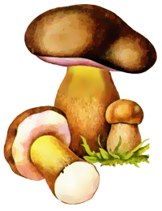 Часто называют ложным белым грибом. Он встречается в июле-октябре одиночно и группа-ми, преимущественно в сыроватых хвойных лесах, около гнилых пней или на них. Иногда желчный гриб бывает похож на подберезовик. Мякоть его на разрезе -розовая, ножка - с темной сеткой, вкус горький. |
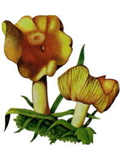 Растет в сосновых, реже смешанных с сосной лесах, преимущественно большими группами. Приподнимается бугорком земля или белый мох - ищите зеленки. Это поздние осенние грибы, растут до самых морозов Шляпка сначала выпуклая, затем плоская, часто с волнистым приподнятым краем, иногда растрескивающимся; плотная, гладкая или слегка покрытая чешуйками, желтовато-зеленоватая, в середине оливково-буроватая. Мякоть хорошо развитая, плотная, белая или желтоватая, приятного вкуса, без особого запаха. Пластинки выемчатые, широкие, серно-желтые. Ножка сплошная, крепкая, плотная, почти вся скрыта в земле, мелкочешуйчатая, одноцветная со шляпкой. Как и лисички, зеленка обладает антибактериальной активностью. Содержит антикоагулянты, препятствующие свертыванию крови. Зеленки маринуют, солят, консервируют. Недостатком зеленки является постоянная примесь песка. От него нетрудно избавиться, замочив грибы на пару часов в соленой воде, а затем тщательно промыв их проточной. |
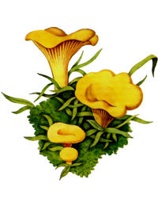 Растет в различных лесах, преимущественно в хвойных. Шляпка вначале слабовыпуклая или почти плоская, к зрелости воронковидная, края сильно волнистые, гладкая, яично-желтая. Мякоть плотная, резинистая, беловатая или желтоватая, с сильным приятным запахом. Пластинки нисходящие на ножку, узкие, вильчато-разветвленные, одноцветные со шляпкой. Ножка короткая, плотная, цилиндрическая, желтая. Содержит много биологически активных веществ, обладает антимикробным действием, которое еще изучается. Лисичка - чемпион среди шляпочных грибов по содержанию витамина РР. Суточная потребность организма в нем покрывается при употреблении 50-60 г лисичек. Ценен этот гриб тем, что не червивеет. Пока это секрет лисички, ибо никаких особых защитных средств против грибных комариков, лесных мух и других насекомых в ней не найдено. Лисички используют для маринования, засола, сушки приготовления баночных консервов. |
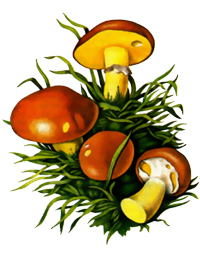 Растет в молодых сосновых, а также смешанных лесах, чаще группами. Светолюбив, заселяет солнечные поляны, обочины до-рог, просеки, места пожарищ. Шляпка в диаметре 3-10 см, полусферическая с опущенными вниз краями, голая, слизистая. Кожица легко отделяется. Окраска - от бурой до светлой с радиальными светлыми полосами. Мякоть белая или желтоватая, слегка водянистая, на срезе цвет не меняет, обладает приятным грибным запахом. Спороносный слой мелкопористый, светло-желтый, легко отделяется от мякоти. Ножка длиной 3-8 см, цилиндрическая, сплошная, золотисто-желтая или слегка буроватая, имеет белое пленчатое кольцо, которое со старением гриба становится коричневым и исчезает. С масленком поздним схож масленок зернистый. Отличается он отсутствием пленчатого кольца на ножке и более сухой поверхностью шляпки. Масленок употребляется в вареном и жареном виде, для маринования, консервирования, сушки. |
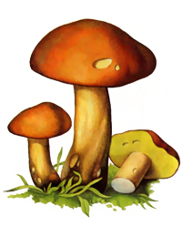 Произрастает во влажных сосновых лесах, преимущественно в северных районах республики. Предпочитает мхи, встречается одиночно и группами. Шляпка мясистая, от полушаровидной до подушковидной, к зрелости уплощенная, оранжево-буроватая, слегка бархатистая с неотделяющейся кожицей. Мякоть плотная, желтоватая, на изломе слегка синеющая, с мягким вкусом и слабым грибным запахом. Трубчатый слой приросший, грязновато-желтый, позднее - серый с буроватым оттенком. Ножка цилиндрическая или равномерно расширенная к основанию, плотная, желтая, светлее шляпки. Употребляется в вареном, жареном, маринованном, сушеном и консервированном видах. Помимо желто-бурого встречается и моховик зеленый. Поверхность его шляпки желтовато-зеленовато-буроватая, замшево-ворсистая. Использование аналогичное. |
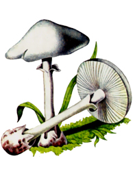 Встречается (нечасто) в июле - октябре небольшими группами в хвойных и смешанных сыроватых лесах, среди мхов, а также на песчаных почвах. Гриб крупный. Его ножка достигает 15 см, шляпка в диаметре - до 12 см, причем шляпка чисто белая, без хлопьев. Пластинки к ножке не прикреплены. Неприятный тяжелый запах издает мякоть. |
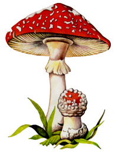 Самый известный населению гриб так как растет повсеместно в течение всего лета и осени Шляпка в диаметре может достигать 20 см, ярко-красна5 или оранжевая, блестящая, с многочисленными белым! хлопьевидными чешуйками. Пластинки белые, частые свободные. Ножка длинная, толстая, плотная, почти ци линдрическая, гладкая, белая, кверху утолщенная приросшими белыми оторочками. Мякоть белая, под кожицей шляпки светло-оранжевая или желтоватая, вкус пресный. |
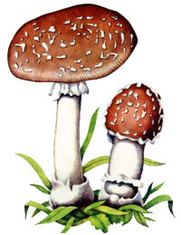 Растет в хвойных и смешанных лесах с июля по октябрь. Имеет выпуклую (5-10 см в диаметре) шляпку, которая по мере роста распрямляется. Шляпка мясистая, липкая, серо-коричневая или коричнево-желтая, в середине более темная, с многочисленными мелкими светлыми хлопьевидными чешуйками. Пластинки неприкрепленные, частые. Ножка плотная, гладкая, с широким белым кольцом, у основания клубневидно-утолщенная, с приросшей белой мешковидной вольвой. Мякоть гриба водянистая, белая, с приятным винным запахом. |
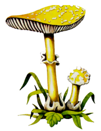 Можно встретить в августе - октябре в различных лесах на песчаной почве. Растет одиночно. Его шляпка в диаметре до 10 см, ножка высотой до 12 см, толщиной до 2 см. Форма шляпки колокольчатая, позднее распростертая, окраска бледно-желтая или даже с зеленоватым оттенком, с крупными грязновато-белыми хлопьями. Пластинки неприкрепленные к ножке, белые или желтоватые. Такую же окраску имеет и ножка. Форма ее типичная, как и у других мухоморов Мякоть толстая, белая, на вкус пресная. |
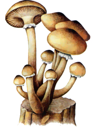 Широко распространенный гриб. Растет на старых пнях и валежнике. Найти опята можно среди кустарников и даже на растущем дереве. По образу жизни этот гриб - паразит. Его грибница внедряется в дерево через кору, даже через неповрежденные ее участки, и выделяет токсины, отравляющие дерево. Дерево, отстаивая свое право на жизнь, выделяет смолу, которая застывает в виде довольно прочных образований, препятствующих распространению грибницы. Однако это плохо помогает. Молодое дерево гриб губит за 2-3 года, старое - за 5-10 лет. Шляпка у опенка осеннего выпуклая, со старением гриба становится плоской, иногда в центре с бугорком, буроватая, чешуйчатая. У молодых грибов имеется белая пленка, соединяющая края шляпки с ножкой. С ростом гриба она остается только на ножке в виде белого колечка. Мякоть мягкая, рыхлая, беловатая, с приятным вкусом и мучным запахом. Пластинки приросшие или слегка нисходящие, беловатые, светло-бурые, узкие, частые. Ножка длинная, цилиндрическая или слегка расширена к основанию, волокнистая, жесткая, сверху светлая, внизу - оливково-буроватая. Широко используется в кулинарии. |
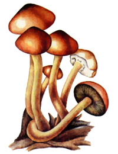 Опенок ложный кирпично-красный. Отличается от опенка настоящего теми же признаками, что и опенок серно-желтый. Опенок ложный кирпично-красный встречается в августе-сентябре на пнях лиственных деревьев и около них. Имеет колокольчатую гладкую шляпку желто-красноватого цвета, более темную в центре. Пластинки прикреплены к ножке, частые, желтоватые с дымчатым от тенком или темно-оливковые. Ножка сначала плотная, потом полая, желтоватая, внизу коричневая. Мякоть желтоватая с неприятным запахом и горьким вкусом. |
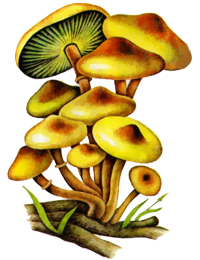 Растет большими группами на гнилой древесине хвойных и лиственных пород. Плодоносит лето и осень. Отличается от опенка осеннего окраской шляпки, отсутствием чешуек на ней и кольца на ножке. Шляпка у опенка ложного серно-желтого в диаметре до 5 см, сначала колокольчатая, затем плоско-выпуклая, нередко с бугорками в середине, тонкая, мясистая, неопушенная, желто-серая, более темная в середине. Пластинки частые, прикрепленные к ножке, желтые, позднее становятся зеленоватыми или фиолетово-коричневыми. Ножка гриба тонкая, полая, в основном изогнутая, вверху серо-желтая с остатками волокнистого светло-желтого колечка, внизу желто-коричневая. Мякоть желтая с неприятным землистым запахом и горьким вкусом. |
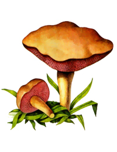 Является "двойником" моховика желто-бурого. Растет одиночно в сосновых лесах в июле - сентябре. Шляпка (в диаметре до 5 см) выпуклая или плоская, бархатистая, коричневая или медно-красная. Ножка цилиндрическая, часто книзу суженная. Гриб характеризуется красновато-вишневым цветом пор, трубочек и ножки, особенно ее верха. Мякоть тонкая, желтая, на изломе краснеет, перечно-жгучего вкуса, без особого запаха. |
Растет в лесах, чаще под березами. Находится обычно поодаль от ствола дерева, там, где оно имеет тонкие молодые корешки, с которыми подберезовик образует микоризу. Шляпка - 2-20 см, шаровидная или полушаровидная, гладкая или слегка волнистая, серая или бурая до черной, с различными оттенками, сухая, во влажную погоду - слегка слизистая. Мякоть плотная, беловатая, на изломе цвет почти не меняет, иногда слегка розовеет, со слабым приятным запахом и вкусом. Трубочки мелкопористые, беловатые или грязно-белые, легко отделяются от мякоти. Ножка до 15 см длины и до 3 см толщины, цилиндрическая или несколько утолщенная книзу, сплошная, белая с продолговатыми чешуйками разного цвета - белого, коричневого, бурого, серо-черного. Гриб используется для сушки, маринования, консервирования. В кулинарных целях пригодны только молодые подберезовики. Старые быстро развариваются, приобретают неприятную слизистую консистенцию. |
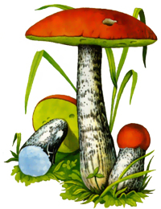 Встречается не только под осинами, а и в березняке, сосновых и еловых лесах, на опушках и полянах. Шляпка крупная, полушаровидная, по мере старения - плоско-выпуклая, в диаметре 5-20 см, бархатисто-волокнистая, сухая; окраска темно-красная или красно-бурая. В зависимости от типа леса может быть и других оттенков. Мякоть плотная, по мере роста размягчается, белая, на изломе окрашивается в розовый, затем в черно-лиловый тона. Вкус мягкий, приятный, без особого запаха. Изменение окраски мякоти не ухудшает вкусовых свойств подосиновика. Трубчатый слой мелкопористый, беловатого или грязно-сероватого цвета. Ножка длиной 5-22 см и в диаметре 1,5-3,5 см, цилиндрическая, к основанию утолщенная, сплошная, покрыта белыми или темно-бурыми чешуйками. Подосиновик используют для маринования, консервирования, соления, сушки. |
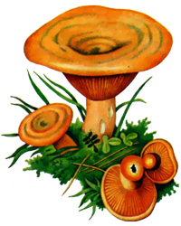 Распространен в сосновых и еловых лесах, особенно на севере Беларуси. Этот гриб узнать нетрудно. Он имеет выпукло-округлую, с возрастом воронковидную, гладкую, голую шляпку, серовато-оранжево-рыжую с более темными концентрическими полосами для сосновой формы и синевато-зеленоватую с желто-оранжевой зональной полосатостью для еловой. Мякоть плотная, ломкая, оранжево-кремовая с оранжевым млечным соком, на изломе зеленеет, затем буреет, неедкая, со смолистым запахом. Пластинки нисходящие или приросшие, частые, толстые, оранжевые, при надавливании зеленеют и буреют. Ножка длиной до 10 см, цилиндрическая, полая, гладкая, оранжевая до буроватой, внутри белая. Гриб ценится очень высоко. С давних пор у нас и во всем мире славятся соленые рыжики. Иногда рыжики маринуют. Очень вкусны рыжики, жаренные в сметане. |
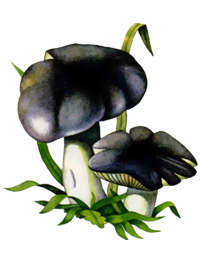 Растет на песчаных почвах в лиственных и сосновых лесах, часто соседствует с зеленкой. Плодоносит рядами, отчего и получила свое название. Шляпка плоско-выпуклая с волнистым, часто надтреснутым краем, мясистая, клейкая, с радиальной волокнистостью. Последняя от грязно-серого до пепельного цвета. Мякоть плотная, белая или сероватая, с мучным запахом и вкусом. Пластинки, приросшие зубцом, выемчатые у места прикрепления к ножке, широкие, белые или желтоватые Ножка цилиндрическая, сплошная, гладкая, продольно-волокнистая, белая или желтоватая. Гриб маринуют, солят, консервируют. |
Можно встретить в июне-октябре в основном в дубовых лесах. Мякоть на разрезе - красновато - фиолетовая, ножка - с красноватым сетчатым рисунком, низ шляпки - красноватый, вкус - горький. |
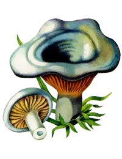 Растет в хвойных с березовым древостоем лесах, одиночно и группами. Шляпка сначала выпуклая, затем воронковидная, час-то изогнутая, серовато-свинцовая или серовато-фиолетовая, с волнистыми концентрическими зонами. Мякоть плотная, хорошо развитая, крепкая, с белым обильным жгучеедким млечным соком и приятным запахом. Пластинки приросшие, сравнительно редкие, толстоватые, местами извилистые, желтовато-кремовые или светло-желтоватые. Ножка небольшая, сначала сплошная, потом полая, иногда несколько вздутая или не вполне центральная, продольно-бороздчатая, светло-фиолетово-серая. Рекомендуется для посола после отваривания или вымачивания. |
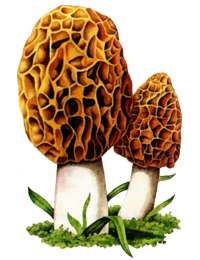 Растет в лиственных и смешанных лесах, на опушках и полях. Шляпка 4-8 см в диаметре, яйцевидной формы, по краю приросшая к ножке, полая, суживается книзу и переходит в ножку. Поверхность шляпки неправильно-сетчатая, с округленными ячейками, темно-коричневая или желтовато-бурая. Мякоть тонкая, хрупкая, нежная, с приятным вкусом и запахом. Ножка длиной до 8 см, цилиндрическая, гладкая или складчатая, внутри полая, ломкая. беловато-желтая. Сморчок обыкновенный употребляют в пищу после предварительного отваривания (без отвара) или сушеным. Сморчок конический отличается от обыкновенного вытянутой конической шляпкой высотой до 10 см. Употребление аналогичное. |
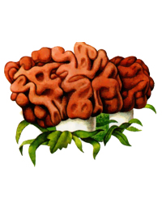 Растет в сосновых, иногда в лиственных лесах. Шляпка неправильной округлой формы, морщинисто складчатая, с буровато-коричневатой поверхностью, полая. Мякоть тонкая, восковидная, хрупкая, со слабым своеобразным запахом. Ножка неровная, к основанию иногда утолщенная, полая, ломкая, белая, с фиолетовым или слабым красноватым оттенком. О способе употребления строчков в пищу в связи с присутствием в этих грибах ядовитого вещества гиромитрина рассказывалось выше. Степень ядовитости строчков зависит от разных факторов: места произрастания, климата, погоды и др. В засушливое время ядовитых веществ накапливается больше. К тому же чувствительность организма к ядам индивидуальна. Имеет значение и количество съеденных строчков. Яд строчков может накапливаться в организме, в результате чего отравление наступает не сразу, а спустя некоторое время после употребления грибов. Заготовительные организации закупают строчки в свежем и сушеном виде для медицинских целей. |
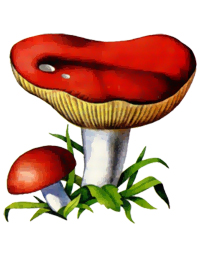 Растет преимущественно в лиственных, иногда хвойных лесах. Шляпка от выпуклой до плоско-выпуклой, вдавленная в центре, край изогнуто-волнистый, иногда приподнятый; поверхность шляпки морщинисто-бугорчатая, сухая, кожица снимается только с краев шляпки. Цвет шляпки - розоватый или буровато-красноватый. Мякоть хорошо развитая, плотная, но ломкая, белая, со сладковатым вкусом и слабым приятным запахом. Пластинки приросшие, частые, ветвящиеся, узкие, белые, иногда с ржавой пятнистостью. Ножка цилиндрическая, книзу иногда сужающаяся, часто морщинистая, твердая, белая. Употребляют гриб в вареном, жареном и соленом ви-дах. Известно более 60 видов сыроежек: синевато-зеленая, пурпурно-красная, желтая, охристая, болотная, жгучеедкая и др. Предпочтение отдается сыроежкам, имеющим толстую мякоть и не обладающим жгучим вкусом. В сыроежке красной ученые обнаружили фермент руссулин. Он заменяет сычужный фермент в производстве творога и сыров. Активность руссулина очень высока: полграмма за полчаса створаживает 100 л молока. |
Растет преимущественно в сосновых лесах среди мхов. Шляпка шаровидная, в середине с завернутыми вниз краями, плотная, мясистая, гладкая, сухая или слегка влажная, светло-бурая с более светлыми пятнами. Мякоть хорошо развитая, плотная, белая, с приятным вкусом и запахом. Пластинки толстые, частые, с неровным краем, одноцветные со шляпкой. Ножка короткая, ровная или слегка суженная к основанию, беловато-буроватая, в середине с остатками паутинистого покрывала, впоследствии исчезающего. Употребляют для соления, маринования, приготовления грибных блюд. |
Встречается на унавоженных почвах в огородах, садах, на полях, лугах, в парках и на выгонах. Шляпка полушаровидная, со старением выпукло-распростертая, с загнутыми краями, гладкошелковистая или чешуйчатая, белая или чуть буроватая. Мякоть плотная, белая, слегка розовеющая, с характерным запахом и приятным вкусом. Пластинки свободные, тонкие, частые, белые, затем розовые, при созревании темно-коричневые или почти темные с фиолетовым оттенком, легко отделяются от мякоти. Ножка центральная, цилиндрическая или булавовидная, сплошная, белая или желтоватая, с тонким исчезающим кольцом. Шампиньон пригоден для консервирования, маринования, соления. |
Онтосится к грибам, похожим на шампиньоны. Распространена в широколиственных лесах. Может встречаться и в парках. Растет в июне-сентябре одиночно и группами. Диаметр шляпки энтоломы ядовитой до 13-15 см. У молодых грибов шляпка выпуклая с выступающим бугорком посередине. Со старением гриба она становится воронковидной. Край шляпки волнистый. Поверхность ее гладкая, цвет беловатый или кремово-желтый. |